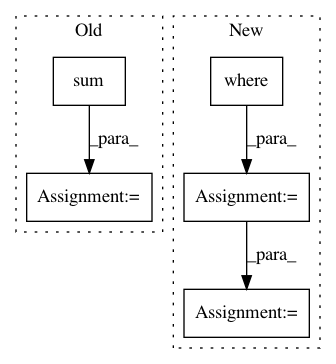

0ed3e9e8b5383390506772029f1afa9f1f90819f,demo_log_odds_ratio_prior.py,,,#,9
Before Change
nlp=nlp).build()
term_freq_df = corpus.get_term_freq_df()
frequencies_scaled = scale(np.log(term_freq_df.sum(axis=1).values))
zeta_i_j = (LogOddsRatioUninformativeDirichletPrior()
.get_zeta_i_j_given_separate_counts(term_freq_df["democrat freq"],
term_freq_df["republican freq"]))
zeta_scaled_for_charting = scale_neg_1_to_1_with_zero_mean_abs_max(zeta_i_j)
After Change
y_label="Log Odds Ratio w/ Prior (a_w=0.01)")
"""
bg_df = (corpus
.get_term_and_background_counts()
.where(lambda x: x.corpus > 0).dropna()
)
bg_df.background += bg_df.corpus
corpus_bg = corpus.remove_terms(set(corpus.get_terms()) - set(bg_df.index))
priors = (corpus_bg
.get_term_and_background_counts()
.reindex(corpus_bg.get_terms())["background"]
)
term_scorer = LogOddsRatioInformativeDirichletPrior(priors.values, 10)
tooltip_context = """(function(d) {
return d.term+"<br/>Count ratio (per 25k): "+d.cat25k+":"+d.ncat25k+"<br/>Z-score: "+ Number(Math.round(d.os+"e3")+"e-3");
})"""
html = produce_fightin_words_explorer(corpus_bg,
category="democrat",
category_name="Democratic",
not_category_name="Republican",
minimum_term_frequency=5,
get_tooltip_content = tooltip_context,
term_scorer=term_scorer)
file_name = "demo_log_odds_ratio_prior_10.html"
open(file_name, "wb").write(html.encode("utf-8"))
print("Open %s in Chrome or Firefox." % file_name)
In pattern: SUPERPATTERN
Frequency: 3
Non-data size: 5
Instances
Project Name: JasonKessler/scattertext
Commit Name: 0ed3e9e8b5383390506772029f1afa9f1f90819f
Time: 2018-01-19
Author: jason.kessler@gmail.com
File Name: demo_log_odds_ratio_prior.py
Class Name:
Method Name:
Project Name: adalca/neuron
Commit Name: 2019b3cae62bdb7740e93b0820fb25692c955cd6
Time: 2017-03-16
Author: adalca@mit.edu
File Name: src/pytools/metrics.py
Class Name: weighted_categorical_crossentropy
Method Name: loss
Project Name: datascienceinc/Skater
Commit Name: da7adc91ee264f933edda8e0b42ac3188a44bc59
Time: 2017-04-03
Author: aikramer2@gmail.com
File Name: pyinterpret/core/global_interpretation/feature_importance.py
Class Name: FeatureImportance
Method Name: feature_importance